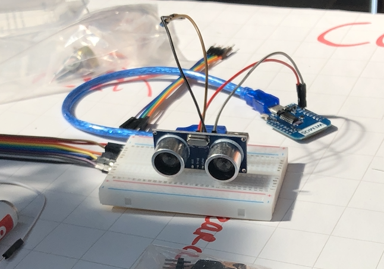
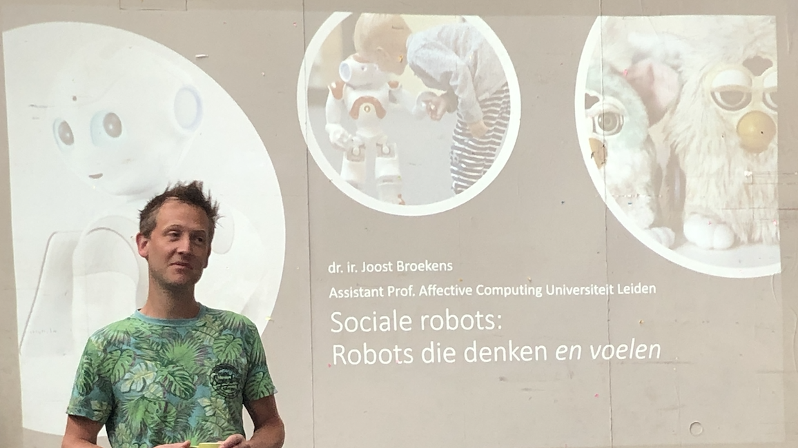

Proces
Dag 1
Op dag 1 zijn de groepen en de onderwerpen bekend gemaakt. Ik heb, gelukkig, geplaats in het onderwerp dat ik als eerste gekozen had, namelijk ‘Playful Interactions’. Mijn groepje bestaat uit vier Nederlandstalige CMD studenten, uit het tweede en derde jaar, namelijk Mirthe, Anne, Kyan en Sjoerd. Ik ben blij met mijn onderwerp en mijn groepje. Als eerste zijn wij begonnen met een ‘scrum-bord’, waarop de termen ‘to do’, ‘doing’ en ‘done’ op staan. Hiermee weet het hele groepje en de docenten wat wij willen doen, wat wij aan het doen zijn en wat wij gedaan hebben. Met mijn groepje heb ik nagedacht over mogelijke ideeën en concepten die bij het onderwerp Playful Interactions. Dit was nog best wel lastig, maar wel heel informatief. Wij hebben ook met allerlei technieken getest, zoals een Makey Makey en de Leap Motion. Deze technieken kunnen gebruikt worden bij o.a. Playful Interactions. Dit gaf ons wel een aantal ideeën, over welke technieken wij zouden kunnen gebruiken en of wij hier concepten bij konden bedenken.
Samen met mijn groepje hebben wij drie concepten kunnen bedenken, alle drie zijn het interactieve spellen. Maar wij willen graag iets maken wat goed gedrag beïnvloed of motiveert, maar dit is nog best lastig hebben we gemerkt.

Dag 2
Dag twee bestond wederom om concepten bedenken en het testen van de middelen die hier aanwezig zijn. Het bedenken van concepten verliep vrij stroef, omdat er geen concept bedacht werd dat iedereen leuk vond of waar iedereen enthousiast van werd. Vervolgens hebben Kyan en ik geprobeerd dingen te bouwen die bij een mogelijk concept zouden passen, zoals het gebruiken van een afstandsmeter in een Arduino. Hiermee kan de afstand tussen het apparaatje en de omgeving gemeten worden en dit kunnen we mogelijk gebruiken bij een uiteindelijk gekozen concept. Dat als iemand dichtbij de sensor komt, dat technologie daarop reageert en er steeds iets anders gebeurt, bijv. iemand laten schrikken als hij langs de sensor loopt.
Doordat ik met verschillende apparaten en technieken ben gaan werken, kon ik afstand nemen van de druk om concepten te bedenken en kwam er toch weer inspiratie naar boven tijdens het uitproberen. Er is in het groepje gewerkt met afstandssensoren, lichtsensoren en projectoren.

Ook kwam Vincent Lindeboom van Next Empire een presentatie geven over zijn werk en al zijn projecten. Ik vond het heel gaaf om te zien hoe iemand uit (ongeveer) de CMD-wereld zo veel verschillende soorten projecten kan doen. Het gaf mij heel veel inspiratie voor concepten van de lab weken, maar ook inspiratie voor wat er allemaal mogelijk is in de toekomst qua werk.
Aan het einde van de dag was ik moe, suf en had ik geen creativiteit meer, dus hadden we als groep besloten om naar de Gamma te gaan en daar te kijken of we op nieuwe concepten zouden kunnen komen. Eenmaal bij de Gamma leek het een apart idee, maar eenmaal in de badkamer afdeling kwam er heel veel inspiratie naar boven. Bij de Gamma hebben we dus een concept bedacht waarbij het een normale, saaie bezigheid zoals naar de wc gaan, leuk en interessant kunnen maken. Verder ga ik nog niks verklappen over het concept … :)

Dag 3
Dag 3 is aangebroken, en we begonnen de dag om 9:30 met een presentatie van Joost Broekens, professor van de Universiteit Leiden. Joost heeft heel veel verteld over zijn werk met Artificial Intellegence, ofwel robots. Hij bouwt en merkt met allerlei robots en heeft hier allerlei voorbeelden van laten zien. Ook liet hij films zien waarin menselijke robots gebruikt werden en wat zij konden. Het onderwerp van de presentatie was erg interessant, maar de presentie duurde heel lang, waardoor ik niet goed mijn concentratie erbij kon houden.
Verder hebben we vandaag de ons concept verder uitgewerkt. Ik heb de naam voor het concept bedacht, namelijke de 'Play Pot'. Het concept van de play pot, waarbij de wc-ervaring leuker gemaakt wordt, want zeg nou zelf, naar de wc gaan is saai. Het is de bedoeling dat er een wc-hok gemaakt wordt, waarin de wc-ervaring nagebootst wordt, maar is deze variant veel leuker. In het wc-hok zit namelijk een spel geïmplementeerd in de mat op de grond. Vandaag hebben we hierover gebrainstormd, over de mogelijkheden, materialen en sensoren. Na deze details besproken te hebben, zijn we gaan nadenken over een spel dat leuk is om te spelen op de WC. We hebben een spel gevonden en dit spel gaan we bouwen en vervolgens uittesten op de interactieve mat.
Na de pauze ben ik met mijn groepje naar Gamma geweest om te kijken welke materialen we nodig gaan hebben voor het wc-hokje. Alles is opgemeten en uitgerekend, en volgende week gaan we beginnen met het bouwen van het wc-hokje. Ook moeten we nog een wc-pot zien te vinden… Hopelijk kunnen we dit ergens gratis op de kop tikken.

Morgen gaan wij ons allen volledig focussen op het maken en testen van de interactieve mat. Ik ben heel benieuwd hoe dat gaat uitpakken, of het gaat werken en hoe het er uiteindelijk uit gaan zien. Wel heb ik super veel zin om echt met mijn handen aan het werk te gaan met ons concept, zodat het concept vorm begint te krijgen en het concept echt tot leven gaat komen.
Dag 4
Het is alweer dag vier, ofwel een derde van de lab weken zijn al voorbij. De afgelopen dagen waar heel zwaar, maar toch wel leuk en ook snel voorbijgegaan.
In de ochtend kregen we een presentatie van Teun Verkerk over zijn werk en Artificial Creatures. Teun is een Interaction Designer die veel projecten heeft gedaan, zowel in Nederland als in het buitenland. Teun had ook 1 project meegenomen, namelijk lichtjes in een gekke omhulsing, die door de stad werd geplaatst en die licht lieten zien en trillingen ging maken.
Na de presentatie ben ik met mijn groepje naar de Gamma gegaan, om alle planken en balken te halen voor het wc-hokje. Eenmaal terug heeft Kyan gelijk alle platen uitgetekend en is hij gaan zagen. Nu zijn alle planken en balken op maat gezaagd, en hoeven ze alleen nog maar geverfd te worden en uiteindelijk in elkaar gezet te worden!
Tot slot zijn we druk bezig geweest met het zoeken naar een wc. Ik heb marktplaats afgezocht naar een wc en uiteindelijk is het gelukt om een gratis wc op te halen via Marktplaats. De wc was zo goed als nieuw en wij zijn heel blij met deze vondst! Ik was heel even bang dat het niet ging lukken met een wc krijgen, omdat ze nieuw heel duur zijn, en nu ben ik toch opgelucht dat het concept toch i.i.g. een wc heeft.
Dag 5
Dag 5 begon weer met een presentatie van een gast spreker, namelijk Marcelle Gomez Maureira, een man met veel achtergronden en vooral veel ervaring heeft in het maken en ontwerpen van videogames. Hij vertelde vandaag over Playful Interactions, het onderwerp dat ik heb, en ik vond het heel interessant om van hem een aantal tips en tricks te krijgen over dit vakgebied.
Na de presentatie was het tijd om de planken en balken te gaan verven, dit wilde ik graag doen, want ik vond het leuk om ook iets met mijn handen te doen! Ook hebben Anne en Mirthe geverfd. De verf was droogde supersnel, waardoor wij heel snel al alle planken twee keer konden verven en ook al snel de achterkant.
Ook zijn ons spel en het logo afgemaakt vandaag, waarbij het spel echt heel fijn is. Nu kan de interactieve mat gekoppeld worden aan het spel en is het belangrijkste onderdeel van ons concept klaar. Ook het logo past heel goed bij ons concept en de gedachten erachter. Ik heb thuis het logo uitgeprint en gelamineerd, zodat het logo goed weergegeven kan worden tijdens de tentoonstelling van de Play Pot!
Ik ben blij dat deze dag wederom een zeer productieve dag was, waarbij er genoeg tijd was om hard te werken en om te chillen. Ik kijk ook uit naar de volgende lab dag, dinsdag 11 juni, want dan gaan wij ons wc-hokje echt bouwen!
Dag 6
Een nieuwe week is aangebroken en daarbij hoort dag 6 van de lab weken. Dag 6 staat ook wel bekend het de bouw namelijk. Ik heb namelijk met mijn groepje een hele hoop gebouwd vandaag.
Eerst ben ik met mijn groepje twee lijsten gaan opstellen, namelijk de lijst voor de eisen van ons product en de eisen voor de omgeving waar wij onze expo gaan houden. Deze lijsten wilde de docenten graag hebben voor inventarisatie en zodat zij een schema kunnen maken voor de plaatsen van alle groepjes tijdens de expo aanstaande vrijdag. Alle eisen/middelen die mijn groepje en ik hebben, hebben we gelukkig al aangeschaft of gebouwd. Verder hoop ik dat onze installatie ergens in een hoek geplaatst kan worden, zodat het nog meer lijkt op een echt wc-hokje.
Vervolgens is het bouwen begonnen. Ik ben samen met Kyan, Anne en Mirthe aan de slag gegaan met het bouwen van het wc-hokje. Gelukkig is Kyan naast student ook bouwvakker, dus hij wist precies hoe alles in elkaar gezet moest worden en hoe er een stevige constructie gemaakt kon worden. Binnen no time waren de geraamtes van het hokje al af en kon het allemaal in elkaar gezet worden. Daarna zijn de planken, ofwel de muren, erin geschroefd en was ons wc-hokje al zo goed als klaar. Wel moest de vloer nog op maat gezaagd worden. Hier is tot het laatste moment mee gewacht, omdat het zonde is om per ongeluk verkeerd te zagen en nu konden we precies opmeten hoe groot het vlak moest zijn. Na de vloer kon de wc-pot er ook in en was de basis van het wc-hokje al bijna af. Alleen nog de voetpedaaltjes, waarmee het spel uiteindelijk bestuurd wordt, en dat is dan het tijd voor de aankleding.
Week twee begon dus heel productief en motiverend, aangezien alles gedaan is wat gedaan moest worden en we precies op schema lopen. Morgen gaan we het wc-hokje helemaal schoonmaken, misschien ergens nog een likje verf op en het scherm voor het spel monteren. Daarna kan er een begin gemaakt worden aan de inrichting van het wc-hokje.
Dag 7
Dag 7 is alweer aangebroken. Nog maar twee dagen en dan moet alles gepresenteerd worden. De deadline voor dit project is morgen; donderdag 13 juni om 5 uur. Op dit tijdsstip moet alles af zijn en moet alles werken. De docenten vertelde dat zij uit ervaring altijd merken dat op de vrijdag van de presentatie, alles kapotgaat. Daarom vind ik het slim dat de deadline op donderdag is, zodat er vrijdag alleen gewerkt kan worden aan mogelijke problemen.
Gister was de basis van het project eigenlijk al af. Vandaag hebben we ervoor gekozen om ons te focussen op de inrichting van het wc-hokje en het toevoegen van meer dingen. De versiering van het wc-hokje komt vooral bij het groepje zelf, van huis meegenomen en de rest hebben we vandaag bij de Action gehaald. Met de juiste inrichting is de sfeer van het wc-hokje veel beter en realistischer, denk ik.
Daarnaast is het scherm voor het spel opgehangen en morgen gaan we deze uitproberen. Ik ben heel benieuwd of dit goed gaat werken, want het scherm zit gekoppeld aan een laptop en die laptop zit gekoppeld aan de Arduino. Ook hebben we een heerlijk zachte badmat gekocht, die over de pedaaltjes van het spel gaan. Op deze mat hebben we voetafdrukken gemaakt en in die voetafdrukken is de stof weggeknipt. Hierdoor is het directe contact op de pedalen veel beter en is het spel beter te bedienen.
Verder zijn we tot een beslissing gekomen om ledverlichting toe te voegen, die groen en rood licht geven. Het is nog niet volledig gelukt om deze te verbinden met het spel, maar daar gaan we morgen mee verder. Ook is het spel een beetje aangepast, bij 500 punten is er een regenboogeffect toegevoegd en is mijn docent Chris Heydra erin verwerkt.
Dag 8
Een hele relaxte en leuke dag is het geweest. Ik ging met Anne en Sjoerd foto’s ophalen bij de Kruidvat, waar het verassend genoeg nog druk was, dus dat duurde even. Eenmaal terug hebben Anne en Mirthe de foto’s in het hokje opgehangen. Ook zijn er stickers opgeplakt waarop met krijt geschreven kan worden. Op deze stickers kunnen we de highscores van de top 3 beste spelers opschrijven.
Vervolgens wilde we het scherm officieel gaan bevestigen, maar we mistte nog een adapter van VGA naar HDMI, zodat het scherm aan de computer gekoppeld kan zijn. Mirthe en Sjoerd zijn naar de Cool Blue winkel geweest en hebben daar zo’n adapter gehaald. Eenmaal terug is het scherm bevestigd en zijn de kabels weggewerkt, zodat het wc-hokje er nog strak uit ziet.
We hadden het idee om led lichtjes toe te voegen aan het wc-hokje die gekoppeld zou worden aan het spel, maar dit lukte helaas niet zoals Sjoerd wilde en kon, dus is er besloten om die te laten. Wel willen we nog wc achtige geluidjes toevoegen aan het spel, maar dat gaan we morgen proberen. Verder zijn er nog kleinere aanpassingen aan het spel gemaakt, zoals disco licht bij 500 punten en nog meer kleinere dingen. Mogelijk gaan we het spel in de disco tijd nog versnellen, zodat het moeilijker wordt om een hoge score neer te zetten.
Dag 9
De allerlaatste dag is aangebroken. Als groep hadden wij besloten om 12 uur af te spreken i.p.v. 9 uur, omdat wij al klaar waren met ons project. We dachten dat van 12 uur tot 3 drie genoeg tijd was om alles op te ruimen en schoon te maken en daarna nog groepjes te kunnen helpen. Eenmaal bij Maakhaven aangekomen, waren de docenten niet erg te spreken over onze beslissing. Zij vonden het egoïstisch van ons dat wij zo laat aan kwamen, terwijl wij vanaf 9 uur ook andere mensen hebben kunnen helpen, wat ik zeker kan begrijpen, en zij gaven ons hier ook straf voor. Dus omdat wij om 12 uur aankwamen, hebben we corvee gekregen en moesten wij beide zalen gaan vegen en schoonmaken. Vervolgens moesten we papiertjes op bordjes plakken, die bij elk project te hangen kwam met hun naam, groepsnaam en uitleg. Ik vond de straf niet heel erg om te doen, de docenten wilde hun punt goed maken. Vervolgens ben ik langs alle groepen geweest om te vragen of ze hulp nodig hadden, maar niemand had hier behoefte aan en was al (zo goed als) klaar. Uiteindelijk hebben we ons hokje opgeruimd, schoongemaakt en gedraaid, zodat de mensen er direct in kon kijken en niet om een hoekje hoefde te kijken.
Om 3 uur was het tijd voor het ‘avondeten’, oftewel pizza! Omdat de expo van 4 uur tot 8 uur duurde, was het beter om dan om 3 uur te eten. Ik vond het echt gezellig om buiten met iedereen lekker pizza te eten en te vieren dat alle projecten klaar zijn. De expo kon bijna beginnen!
Om 4 uur was het dan zover, een voor een druppelde er steeds meer mensen binnen en was onze ‘Play Pot’ een groot succes. Ook gaf docent Chris Heydra nog een korte toespraak, waarin hij iedereen welkom heette en de expo officieel opende. Wij stonden bij de ingang, dus de ‘Play Pot’ was het eerste wat de mensen zagen. Mijn groepsgenoten hebben in het begin zelf rondgelopen, samen met familie en vrienden. Dus een groot deel van de middag/avond heb ik de Play Pot begeleid en uitgelegd aan de mensen. Ik vond dit heel leuk om te doen, omdat mensen het heel leuk vonden en ik met trots kon presenteren wat mijn groepje en ik gedaan hebben de afgelopen dagen. Gelukkig kregen we alleen maar goede feedback en reactie van de mensen, ook al ging het spelen niet helemaal lekker bij iedereen. Ze vonden vooral het wc-hokje zelf heel leuk en dit hielp echt bij de sfeer van het concept. Ook het spel werd als leuk ervaren, en mensen dachten dat het heel makkelijk was, maar toen ze eenmaal zaten en speelde vonden ze het toch wel lastig. Om 16:15 hadden we een klein probleem, namelijk 1 pedaal was losgekomen. Gelukkig had Mirthe nog een lijmpistool bij zich en was het probleem na 5 minuten opgelost. Daarna hebben de pedalen het volgehouden tot 8 uur en zijn ze niet meer losgekomen of kapotgegaan. Vooral hier was ik heel blij mee, want het kan zomaar zijn dat er iets kapotgaat en dat het spel niet meer gespeeld zou kunnen worden. Na de expo, om 8 uur, sloot docent Chris Heydra de expo en de lab weken af met een speech, waarbij iedereen super enthousiast was en iedereen bedankt werd.
Uiteindelijk is de ‘Play Pot’ drukbezocht geweest van 4 uur tot 8 uur en was het een groot succes! Ook vond ik het heel leuk om tussendoor ook bij andere projecten te kijken en hun ding uit te proberen. Veel projecten waren in de ochtend nog niet klaar, maar nu wel en het was heel gaaf om te zien wat iedereen gemaakt had en hoe ze het gepresenteerd hadden.
Uiteindelijk moest de ‘Play Pot’ ook weer opgeruimd worden… Deze hebben we eerst voorzichtig leeggemaakt en vervolgens in elkaar getrapt en het was supersnel ‘gesloopt’ weer. Ergens deed het toch wel een beetje pijn om al het harde werk dat erin zit zo kapot te maken, maar het was niet anders. En het was een mooie afsluiting van deze twee weken. Al met al was het een lange, maar hele geslaagde dag en kan ik super positief terugkrijgen op de HCI lab weken.